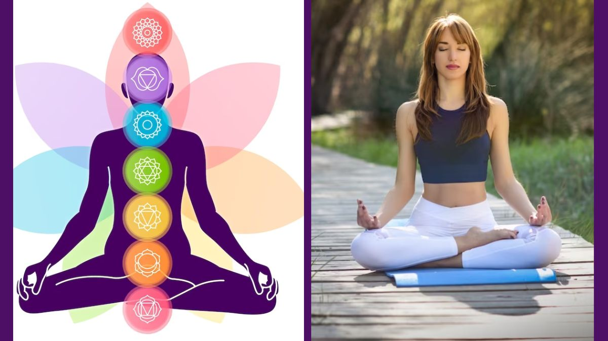
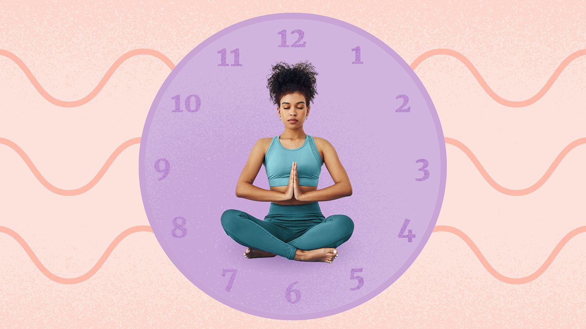

What is Meditation?
In mindfulness meditation, we’re learning how to pay attention to the breath as it goes in and out, and notice when the mind wanders from this task.
This practice of returning to the breath builds the muscles of attention and mindfulness.
When we pay attention to our breath, we are learning how to return to, and remain in, the present moment—to anchor ourselves in the here and now
on purpose, without judgement.
The idea behind mindfulness seems simple—the practice takes patience.
Why Learn How to Meditate?
While meditation isn’t a cure-all, it can certainly provide some much-needed space in your life.
Sometimes, that’s all we need to make better choices for ourselves, our families, and our communities.
And the most important tools you can bring with you to your meditation practice are a little patience, some kindness for yourself,
and a comfortable place to sit.
When we meditate, we inject far-reaching and long-lasting benefits into our lives.
And bonus: you don’t need any extra gear or an expensive membership.
Here are five reasons to meditate:
- Understanding your pain
- Lower your stress
- Connect better
- Improve focus
- Reduce brain chatter
How to Meditate?
Meditation is simpler (and harder) than most people think. Read these steps, make sure you’re somewhere where you can relax into this process, set a timer, and give it a shot:
1)Take a seat:
Find place to sit that feels calm and quiet to you.
2)Set a time limit:
If you’re just beginning, it can help to choose a short time, such as five or 10 minutes.
3) Notice your body:
You can sit in a chair with your feet on the floor, you can sit loosely cross-legged, you can kneel—all are fine. Just make sure you are stable and in a position you can stay in for a while.
4) Feel your breath:
Follow the sensation of your breath as it goes in and as it goes out.
5) Notice when your mind has wandered:
Inevitably, your attention will leave the breath and wander to other places. When you get around to noticing that your mind has wandered—in a few seconds, a minute, five minutes—simply return your attention to the breath.
6) Be kind to your wandering mind:
Don’t judge yourself or obsess over the content of the thoughts you find yourself lost in. Just come back.
7) Close with kindness: When you’re ready, gently lift your gaze (if your eyes are closed, open them). Take a moment and notice any sounds in the environment. Notice how your body feels right now. Notice your thoughts and emotions.
How Much Should I Meditate?
Meditation is no more complicated than what we’ve described above. It is that simple … and that challenging.
It’s also powerful and worth it. The key is to commit to sit every day, even if it’s for five minutes.
Meditation teacher Sharon Salzberg says: “One of my meditation teachers said that the most important moment in your meditation practice is the moment you sit down to do it.
Because right then you’re saying to yourself that you believe in change, you believe in caring for yourself, and you’re making it real.
A Basic Meditation for Beginners

The first thing to clarify: What we’re doing here is aiming for mindfulness, not some process that magically wipes your mind clear of the countless and endless thoughts that erupt and ping constantly in our brains. We’re just practicing bringing our attention to our breath, and then back to the breath when we notice our attention has wandered.
- Get comfortable and prepare to sit still for a few minutes. After you stop reading this, you’re going to simply focus on your own natural inhaling and exhaling of breath.
- Focus on your breath. Where do you feel your breath most? In your belly? In your nose? Try to keep your attention on your inhale and exhale.
- Follow your breath for two minutes. Take a deep inhale, expanding your belly, and then exhale slowly, elongating the out-breath as your belly contracts.